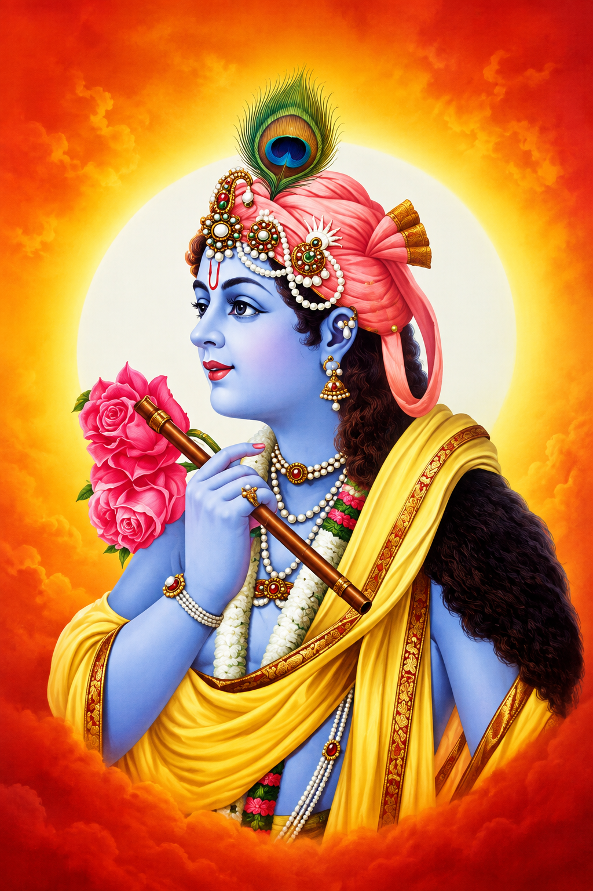
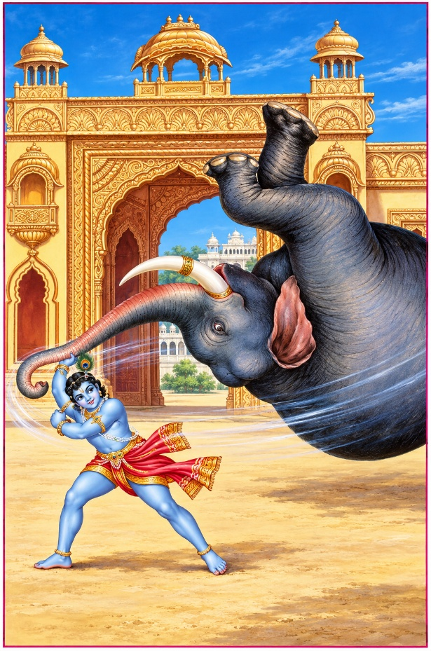
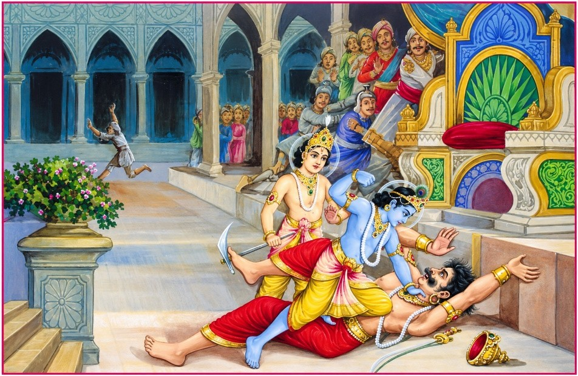
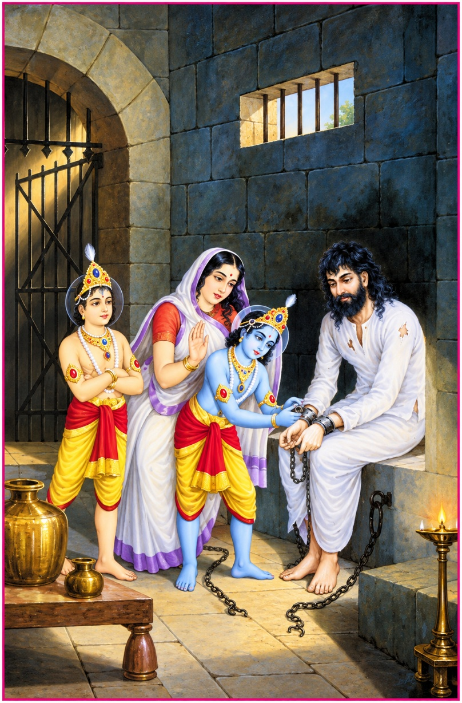
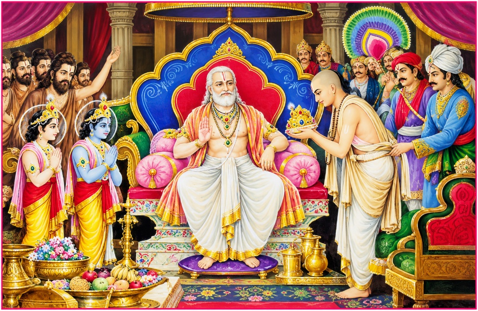
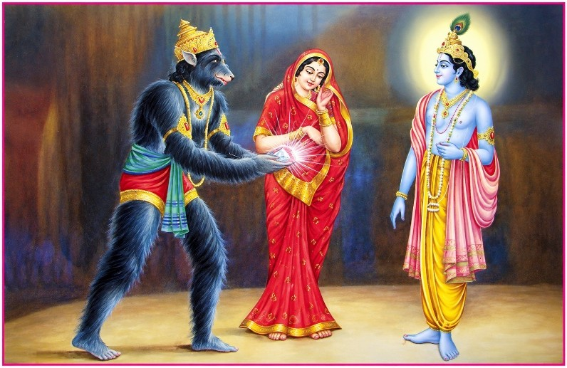
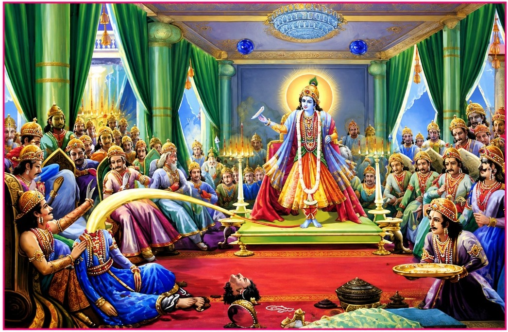
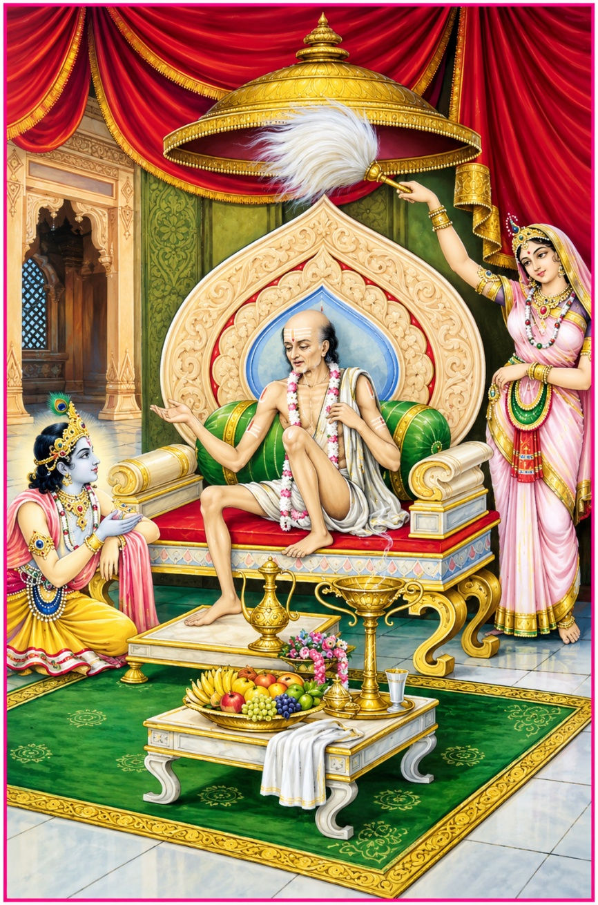
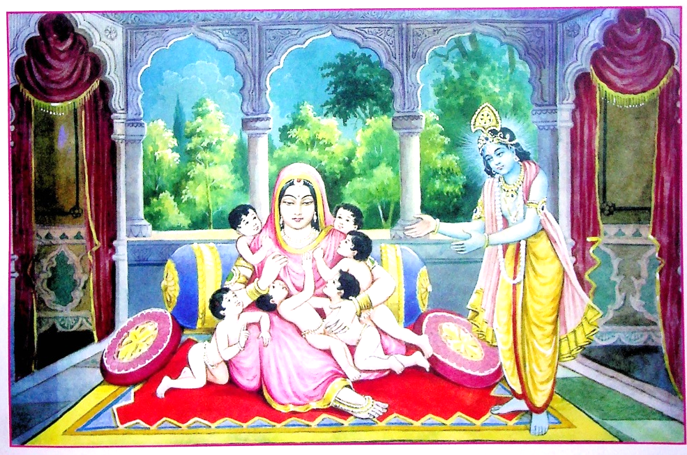
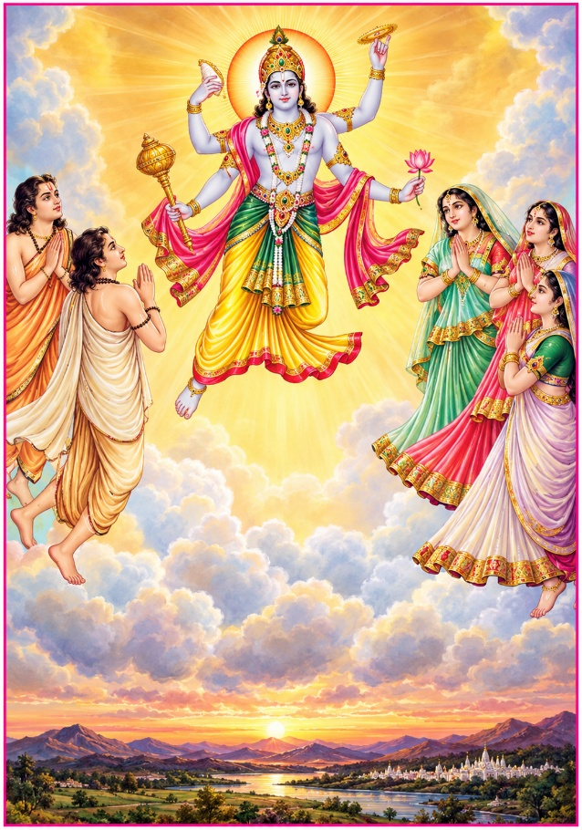

॥ श्रीहरि:॥
श्रीकृष्ण

त्वमेव माता च पिता त्वमेव
त्वमेव बन्धुश्च सखा त्वमेव।
त्वमेव विद्या द्रविणं त्वमेव
त्वमेव सर्वं मम देवदेव॥
१. कुवलयापीड-उद्धार

कंसने भगवान् श्रीकृष्णको मार डालनेके उद्देश्यसे ही धनुषयज्ञका आयोजन किया था। श्रीकृष्ण पुरवासियोंसे धनुषयज्ञका स्थान पूछते हुए कंसकी रंगशाला पहुँचे। उन्होंने कंसके रक्षकोंके रोकनेपर भी बायें हाथसे धनुषको उठा लिया और सबके देखते-देखते उसके दो टुकड़े कर डाले। जब धनुषके रक्षकोंने श्रीकृष्णको मारनेके लिये घेर लिया तो श्रीकृष्णने धनुषके उन्हीं टुकड़ोंसे उन सबको यमलोक भेज दिया।
जब कंसने सुना कि श्रीकृष्ण और बलरामने धनुष तोड़ डाला तथा रक्षकोंका संहार कर डाला तो वह बहुत घबड़ाया। उसे रातमें बहुत देरतक नींद नहीं आयी। उसे मृत्युसूचक बहुत-से अपशकुन दिखायी देने लगे। उनके कारण उसे बहुत चिन्ता हो गयी। चारों तरफ श्रीकृष्ण-बलरामके रूपमें उसे अपनी मृत्यु दिखायी देने लगी। किसी तरह नाना प्रकारकी आशंकाओंमें उसने जागते हुए रात बितायी।
दूसरे दिन कंसने श्रीकृष्णको फिर मारनेकी इच्छासे मल्ल-क्रीड़ाका आयोजन किया। राज-कर्मचारियोंने रंगभूमिको भलीभाँति सजाया। तुरही, भेरी आदि बाजे बजने लगे। लोगोंके बैठनेके स्थानको झंडियों और बन्दनवारोंसे सजाया गया। सब लोग यथास्थान बैठ गये। राजा कंस अपने मन्त्रियोंके साथ श्रेष्ठ सिंहासनपर जा बैठा। पहलवानोंके ताल ठोंकनेके साथ बाजे भी बजने लगे। चाणूर, मुष्टिक आदि कंसके प्रधान पहलवान अखाड़ेके आस-पास आकर बैठ गये। इसी समय भोजराज कंसने नन्द आदि गोपोंको बुलवाया। उन लोगोंने कंसको तरह-तरहकी भेंटें दीं और फिर यथास्थान बैठ गये।
भगवान् श्रीकृष्णने रंगभूमिके दरवाजेपर पहुँचकर देखा कि वहाँ कुवलयापीड नामक हाथी खड़ा है। उन्होंने अपनी कमर कस ली और महावतको ललकारा—
'महावत ! ओ महावत !! हम दोनोंको रास्ता दे दे, नहीं तो मैं हाथीके साथ तुझे भी यमराजके घर पहुँचा दूँगा।'
भगवान् श्रीकृष्णके धमकानेपर महावत तिलमिला उठा। उसे तो श्रीकृष्णको मार डालनेका आदेश था ही। उसने अङ्कुशकी मारसे कुवलयापीडको क्रोधित कर श्रीकृष्णकी ओर बढ़ाया। कुवलयापीडने श्रीकृष्णको झपटकर अपनी सूँड़में लपेट लिया। श्रीकृष्ण उसे जोरसे एक घूँसा जमाकर उसके पैरोंके बीच जा छिपे। उसके बाद वे उस बलवान् हाथीकी पूँछ पकड़कर उसे सौ हाथतक घसीट लाये।
सबके देखते-देखते भगवान् श्रीकृष्णने एक हाथसे कुवलयापीडकी सूँड़ पकड़कर उसे धरतीपर पटक दिया। उसके गिर जानेपर खेल-खेलमें पैरोंसे दबाकर उसके दोनों दाँत उखाड़ लिये और उन्हीं दाँतोंसे हाथी और महावत दोनोंका काम तमाम कर दिया।
भगवान् श्रीकृष्ण और बलरामने जिस समय हाथीके दाँतको लाठियोंकी तरह अपने कंधोंपर रखकर रंगभूमिमें प्रवेश किया, उस समय उनकी शोभा देखने ही योग्य थी। जब कंसने देखा कि इन दोनोंने कुवलयापीडको मार डाला तब उसकी समझमें यह बात आ गयी कि इनको जीतना बड़ा कठिन है। उस समय वह और भी घबड़ा गया। रंगभूमिमें चारों तरफ श्रीकृष्ण-बलरामकी ही चर्चा होने लगी।
२. कंस-वध

भगवान् श्रीकृष्ण और बलरामके रंगभूमिमें आनेपर चाणूर एवं मुष्टिकने उन्हें मल्लयुद्धके लिये ललकारा। श्रीकृष्ण चाणूर और बलरामजी मुष्टिकसे जा भिड़े। भगवान् श्रीकृष्णके अंगोंकी रगड़से चाणूरकी रग-रग ढीली पड़ गयी। उन्होंने चाणूरकी दोनों भुजाएँ पकड़ लीं और बड़े वेगसे कई बार घुमाकर धरतीपर दे मारा। चाणूरके प्राण निकल गये और वह कटे वृक्षकी भाँति गिरकर शान्त हो गया। बलरामजीने मुष्टिकको एक घूँसा जमाया और वह खून उगलता हुआ पृथ्वीपर गिरकर मर गया। देखते-ही-देखते कंसके पाँचों प्रमुख पहलवान श्रीकृष्ण और बलरामद्वारा मारे गये।
भगवान् श्रीकृष्ण और बलरामकी इस अद्भुत लीलाको देखकर दर्शकोंको बड़ा आनन्द हुआ। चारों ओर उनकी जय-जयकार और प्रशंसा होने लगी, परन्तु कंसको इससे बहुत दुःख हुआ। वह और भी चिढ़ गया। जब उसके प्रधान-प्रधान पहलवान मारे गये और बचे हुए भाग गये तब उसने बाजे बन्द करा दिये। कंसने अपने सेवकोंको आज्ञा दी कि वसुदेवके लड़कोंको बाहर निकाल दो, गोपोंका सारा धन छीन लो और नन्दको बन्दी बना लो तथा वसुदेव-देवकीको मार डालो। उग्रसेन मेरा पिता होनेपर भी शत्रुओंसे मिला हुआ है; इसलिये उसे भी जीवित मत छोड़ो।
कंस इस प्रकार बढ़-चढ़कर बकवाद कर ही रहा था कि भगवान् श्रीकृष्ण फुर्तीसे उछलकर उसके मंचपर पहुँच गये। जब कंसने देखा कि उसके मृत्युरूप भगवान् श्रीकृष्ण उसके सामने आ गये तब वह तलवार लेकर उठ खड़ा हुआ और श्रीकृष्णपर चोट करनेके लिये पैतरा बदलने लगा। जैसे गरुड़ साँपको पकड़ लेता है, वैसे ही श्रीकृष्णने कंसको पकड़ लिया। कंसका मुकुट गिर गया। भगवान्ने केश पकड़कर उसे मंचसे धरतीपर पटक दिया। फिर श्रीकृष्ण स्वयं उसके ऊपर कूद पड़े। उनके कूदते ही कंसकी मृत्यु हो गयी।
कंस निरन्तर शत्रुभावसे श्रीकृष्णका ही चिन्तन करता रहता था। वह खाते-पीते, उठते-बैठते अपने सामने भगवान् श्रीकृष्णको ही देखता रहता था। इसके प्रभावसे उसे सारूप्य मुक्तिकी प्राप्ति हुई। सबके देखते-ही-देखते उसके शरीरसे एक दिव्य तेज निकलकर श्रीकृष्णमें समा गया।
कंसके मरते ही कङ्क इत्यादि उसके आठ छोटे भाई श्रीकृष्ण और बलरामको मारनेके लिये दौड़े। बलरामजीने क्षणभरमें उनका काम तमाम कर डाला। उस समय आकाशमें दुन्दुभियाँ बजने लगीं। ब्रह्मा, शंकर तथा इन्द्रादि देवता बड़े आनन्दसे भगवान् श्रीकृष्णपर पुष्पोंकी वर्षा करते हुए उनकी स्तुति करने लगे।
कंस और उसके भाइयोंकी स्त्रियाँ अपने पतियोंकी मृत्युपर विलाप करती हुई वहाँ आयीं। भगवान् श्रीकृष्ण सारे संसारके जीवनदाता हैं। उन्होंने कंसकी रानियोंको समझाकर ढाढ़स बँधाया। तदनन्तर भगवान् श्रीकृष्णने मरनेवालोंकी लोकरीतिके अनुसार क्रिया-कर्मकी व्यवस्था करवा दी।
३. माता-पिताको बन्धनमुक्त करना

कंसके अन्तिम संस्कारकी व्यवस्था करनेके बाद भगवान् श्रीकृष्ण और बलरामजीने जेलमें जाकर अपने माता-पिताको बन्धनसे छुड़ाया और उनके चरणोंकी वन्दना की। परन्तु वसुदेव और देवकीने उन्हें ईश्वर समझकर हृदयसे नहीं लगाया। वे सोच रहे थे कि हम भगवान्को अपना पुत्र कैसे समझें।
भगवान् श्रीकृष्णने देखा कि माता-पिताको मेरे भगवद्भाव-(ऐश्वर्यका) ज्ञान हो गया है; इसलिये माता-पिताको मोहित करनेके लिये अपनी योगमायाको आदेश दिया। फिर भगवान् श्रीकृष्णने अपने बड़े भाई बलरामजीके साथ अपने माता-पिताके चरणोंमें झुककर प्रणाम किया। उसके बाद उन्होंने कहा—
'पिताजी !, माताजी ! हम आपके प्रिय पुत्र हैं। आपलोग हमारे लिये सदैव चिन्तित रहा करते थे। दुर्भाग्यवश हमें आपके पास रहनेका सौभाग्य नहीं मिला। इसलिये हमें माता-पिताके लाड़-प्यारसे वञ्चित रहना पड़ा। माता-पिता ही इस शरीरको जन्म देते हैं और इसका लालन-पालन करते हैं। यदि कोई मनुष्य जीवनभर माता-पिताकी सेवा करता रहे, तब भी वह उनके उपकारसे उऋण नहीं हो सकता।
जो पुत्र सामर्थ्य रहते भी अपने माता-पिताकी सेवा नहीं करता, उसके मरनेपर यमदूत उसे उसके शरीरका ही मांस खिलाते हैं। जो अपने माता-पिता, गुरु, ब्राह्मण और शरणागतका भरण-पोषण नहीं करता—वह जीता हुआ भी मुर्देके समान है। पिताजी ! हमारे इतने दिन व्यर्थ गये, क्योंकि दुष्ट कंसके कारण हम आपकी सेवा न कर सके। हाय ! पापी कंसने आप दोनोंको कितने दुःख दिये। आप हमें क्षमा करें और अपनी सेवाका अवसर दें। अब हम आप दोनोंको छोड़कर कहीं नहीं जायँगे।'
विश्वात्मा श्रीकृष्णकी वाणीसे वसुदेव-देवकी मोहित हो गये। भला, भगवान्की योगमायाके प्रभावसे बिना उनकी इच्छाके कौन मुक्त हो सकता है। इसलिये वसुदेव-देवकीका तत्त्वज्ञान क्षणभरमें लोप हो गया।
जब भगवान् श्रीकृष्णने अपने माता-पितासे क्षमा माँगी तो वसुदेव-देवकीका पुत्र-स्नेह पुनः उमड़ आया। उन्होंने श्रीकृष्ण-बलरामको हृदयसे चिपकाकर प्यार किया, बार-बार उनके मुखपर चुम्बनोंकी झड़ी लगा दी। भगवान् श्रीकृष्ण और बलरामको पाकर वसुदेव और देवकीका हृदय परमानन्दसे भर गया। वे भगवान्के स्नेहपाशमें बँधकर पूर्णतः मोहित हो गये। उनकी आँखोंसे अश्रुधारा प्रवाहित होने लगी। यहाँतक कि आँसुओंके कारण गला रुँध जानेसे वे कुछ बोल भी न सके। आज उनके सम्पूर्ण जीवनकी तपस्याका फल मिल गया। वे पुत्र-प्रेमके असीम समुद्रमें आकण्ठ डूब गये। चारों ओरसे आती हुई श्रीकृष्ण-बलरामकी जय-जयकार उनके कानोंमें मधुर रस घोलने लगी।
४. उग्रसेनका राज्याभिषेक

कंसने अपने पिता उग्रसेनको भी कारागारमें बन्द कर रखा था। भगवान् श्रीकृष्णने अपने माता-पिताको सान्त्वना देनेके बाद अपने नाना उग्रसेनको भी बन्धनमुक्त किया तथा उन्हें पुनः मथुराका राजा बनाया। कंस उन्हें कैदमें डालकर जबरन स्वयं मथुराका राजा बन बैठा था।
भगवान् श्रीकृष्णने उग्रसेनसे कहा—
'नानाजी ! अब आप यहाँके राजा हैं और हम सब आपकी प्रजा हैं। आप हमलोगोंपर शासन कीजिये। मेरे रहते अब आपको कोई भय नहीं है। अब मैं आपका सेवक बनकर आपकी सेवा करता रहूँगा। बड़े-बड़े देवता भी सिर झुकाकर आपको भेंट देंगे। दूसरे राजाओंके विषयमें तो कहना ही क्या है।'
इस प्रकार उग्रसेनको समझाकर भगवान् श्रीकृष्णने वेदज्ञ ब्राह्मणोंको बुलवाकर वैदिक मन्त्रोंसे विधिवत् उनका राज्याभिषेक करवाया। कंसके अत्याचारसे घबड़ाकर जो यदुवंशी इधर-उधर भाग गये थे भगवान् श्रीकृष्णने उन्हें बुलवाया, उनका सत्कार किया तथा उन्हें खूब धन-सम्पत्ति देकर अपने-अपने घरोंमें बसा दिया।
अब महाराज उग्रसेनके राज्यमें सारे-के-सारे यदुवंशी भगवान् श्रीकृष्णके बाहुबलसे सुरक्षित हो गये। उनकी कृपासे उन्हें किसी प्रकारका कष्ट नहीं रहा। चारों तरफ धर्मका साम्राज्य स्थापित हो गया। यदुवंशियोंके सम्पूर्ण मनोरथ सफल हो गये। वे कृतार्थ हो गये, आनन्दसे अपने-अपने घरोंमें विहार करने लगे।
भगवान् श्रीकृष्ण ही विश्वके विधाता हैं। उनका वदन आनन्दका सदन है। उनका सौन्दर्य अपार है। यदुवंशी नित्यप्रति उनका दर्शन करके आनन्दमग्न रहते। मथुराके वृद्ध पुरुष भी युवकोंके समान उत्साही और बलवान् हो गये थे, क्योंकि वे अपने नेत्रोंसे भगवान्के मुखारविन्दका अमृतमय रसपान करते थे।
भगवान् श्रीकृष्णने नन्द बाबा आदिको समझाकर बड़े आदर-सत्कारसे वस्त्र-आभूषण देकर विदा किया। नन्दबाबाने प्रेमसे अधीर होकर दोनों भाइयोंको गले लगाया और आँखोंमें आँसू भरकर गोपोंके साथ व्रजके लिये प्रस्थान किया।
इसके बाद वसुदेवजीने अपने पुरोहित गर्गाचार्य और अन्य ब्राह्मणोंद्वारा श्रीकृष्ण और बलरामका यज्ञोपवीत-संस्कार करवाया। उन्होंने ब्राह्मणोंको बहुत-सी दक्षिणा तथा सवत्सा गौएँ दीं।
फिर भगवान् श्रीकृष्ण और बलराम विद्या प्राप्त करनेकी इच्छासे सान्दीपनि मुनिके पास उज्जैन गये। थोड़े ही दिनोंमें वे सम्पूर्ण विद्याओंमें निपुण होकर तथा अपनी सेवासे गुरुको संतुष्टकर मथुरा लौट आये। भगवान्को पुनः मथुरामें पाकर मथुरावासियोंके आनन्दका ठिकाना न रहा।
५. जाम्बवती-परिणय

सत्राजित् नामक यादव भगवान् सूर्यका परम भक्त था। भगवान् सूर्यने प्रसन्न होकर उसे स्यमन्तक मणि प्रदान की थी। वह मणि प्रतिदिन आठ भार सोना दिया करती थी और वह जहाँ रहती वहाँ दुर्भिक्ष, महामारी, ग्रहपीड़ा आदि प्रवेश भी नहीं कर सकते थे। कभी कोई उपद्रव और अशुभ नहीं होता था।
एक बार भगवान् श्रीकृष्णने प्रसंगवश कहा—
'सत्राजित् ! तुम अपनी मणि राजा उग्रसेनको दे दो। इससे यह बहुमूल्य वस्तु सुरक्षित हो जायगी और तुम्हें यश भी मिलेगा।'
परन्तु सत्राजित् अहङ्कारी तथा-अर्थलोलुप था। उसने भगवान् श्रीकृष्णका प्रस्ताव ठुकरा दिया।
एक दिन सत्राजित्का भाई प्रसेनजित् उस मणिको अपने गलेमें धारणकर शिकार खेलनेके लिये वनमें गया। वहाँ एक सिंहने प्रसेनको मार डाला और मणिको छीन लिया। उसके बाद ऋक्षराज जाम्बवान्ने सिंहको मारकर वह मणि अपनी गुफामें ले जाकर बच्चोंको खेलनेके लिये दे दी। अपने भाई प्रसेनके न लौटनेपर सत्राजित्को बड़ा दुःख हुआ। वह कहने लगा—
'बहुत सम्भव है श्रीकृष्णने ही मणिके लोभमें मेरे भाईको मार डाला हो। क्योंकि वह मणि पहनकर वनमें शिकार खेलने गया था।'
जब श्रीकृष्णने सुना कि सत्राजित् मुझे ही कलङ्क लगा रहा है तब वे उसे धो डालनेके उद्देश्यसे प्रसेनको ढूँढ़नेके लिये नगरके कुछ गणमान्य नागरिकोंको लेकर वनमें गये। खोजते-खोजते उन्होंने देखा कि जंगलमें किसी सिंहने प्रसेन और उसके घोड़ेको मार डाला है। जब सिंहके पैरोंका निशान देखते हुए वे लोग आगे बढ़े तो देखा कि एक रीछने सिंहको भी मार डाला है। रीछके पदचिह्नोंके निशान देखते हुए सब गुफातक पहुँचे।
भगवान् श्रीकृष्णने सब लोगोंको बाहर ही बिठा दिया और अकेले ही घोर अन्धकारसे भरी हुई ऋक्षराज जाम्बवान्की भयङ्कर गुफामें प्रवेश किया। वहाँ उन्होंने देखा कि श्रेष्ठ स्यमन्तक मणिको बच्चोंका खिलौना बना दिया गया है। भगवान् श्रीकृष्ण जैसे ही मणि लेनेके लिये आगे बढ़े, अचानक क्रोधित होकर जाम्बवान् सामने आ गये। उस समय उन्हें भगवान्की महिमा और प्रभावका ज्ञान नहीं था। इसलिये वे भगवान् श्रीकृष्णसे घमासान युद्ध करने लगे।
भगवान्के घूँसोंकी चोटसे जाम्बवान्के शरीरकी एक-एक गाँठ फूट गयी। पूरे अट्ठाईस दिनोंतक युद्ध चलता रहा। जाम्बवान्का शरीर पसीनेसे लथपथ हो गया। उत्साह जाता रहा। अन्तमें उन्होंने भगवान् श्रीकृष्णको पहचान लिया और कहा—
'प्रभो! मैं जान गया कि आप ही पुराणपुरुष भगवान् विष्णु हैं। मुझे पराजित करनेकी क्षमता किसी साधारण मनुष्यमें नहीं हो सकती। आप विश्वके रचयिता ब्रह्मा आदिको भी बनानेवाले हैं। आप अज्ञानवश हुए मेरे अपराधको क्षमा करें।'
भगवान् श्रीकृष्णने कहा—
'ऋक्षराज! हम मणिके लिये ही तुम्हारी इस गुफामें आये हैं। इस मणिके द्वारा मैं अपनेपर लगे झूठे कलङ्कको मिटाना चाहता हूँ।'
भगवान्के ऐसा कहनेपर जाम्बवान्ने बड़े आनन्दसे उनकी पूजा की तथा अपनी कन्या कुमारी जाम्बवतीको मणिके साथ उनके चरणोंमें समर्पित कर दिया। भगवान् श्रीकृष्ण अपनी नववधू जाम्बवतीके साथ द्वारका लौट आये और मणि सत्राजित्को लौटाकर अपनेपर लगे कलङ्कको मिटा दिया।
६. शिशुपाल-वध

जब भगवान् श्रीकृष्ण भीमसेनद्वारा जरासन्धका वध करवाकर तथा उसके द्वारा बन्दी बनाये गये राजाओंको मुक्त करके इन्द्रप्रस्थ लौट आये तब महाराज युधिष्ठिरने राजसूय यज्ञका आयोजन किया। उन्होंने भगवान् श्रीकृष्णकी अनुमतिसे वेदवादी ब्राह्मणोंका आचार्य आदिके रूपमें वरण किया। धर्मराज युधिष्ठिरने सभी प्रधान ऋषियोंके साथ द्रोणाचार्य, भीष्मपितामह, कृपाचार्य, धृतराष्ट्र, दुर्योधन तथा विदुर आदिको भी यज्ञमें आमन्त्रित किया। राजसूय यज्ञका दर्शन करनेके लिये देश-विदेशके सब राजा, उनके मन्त्री तथा ब्राह्मण, क्षत्रिय, वैश्य, शूद्र—सब-के-सब वहाँ आये।
ब्राह्मणोंने सोनेके हलोंसे यज्ञभूमिको जुतवाकर राजा युधिष्ठिरको शास्त्रानुसार यज्ञकी दीक्षा दी। यज्ञके सब पात्र सोनेके बने हुए थे। विधिपूर्वक यज्ञकार्य प्रारम्भ हुआ। अब सभासद लोग इस विषयपर विचार करने लगे कि सदस्योंमें अग्रपूजा किसकी होनी चाहिये। जितनी मति थी उतने मत। इसलिये सर्वसम्मतिसे कोई निर्णय न हो सका।
सहदेवने कहा—
'यदुवंशशिरोमणि भगवान् श्रीकृष्ण ही अग्रपूजाके अधिकारी हैं। यह सारा विश्व ही श्रीकृष्णका रूप है। समस्त यज्ञ भी श्रीकृष्णस्वरूप ही हैं। ये अपने संकल्पसे ही जगत्की सृष्टि, पालन और संहार करते हैं। इसलिये सबसे महान् भगवान् श्रीकृष्णकी ही अग्रपूजा होनी चाहिये।'
इतना कहकर सहदेव चुप हो गये। उस समय युधिष्ठिरकी यज्ञसभामें जितने सत्पुरुष थे, सबने एक स्वरसे 'बहुत ठीक' कहकर सहदेवकी बातका समर्थन किया। धर्मराज युधिष्ठिरने सभासदोंका अभिप्राय जानकर बड़े ही आनन्दसे भगवान् श्रीकृष्णके पाँव पखारे। उस समय देवताओंने आकाशसे पुष्पोंकी वर्षा की।
अपने आसनपर बैठा शिशुपाल यह सब देख रहा था। भगवान् श्रीकृष्णकी अग्रपूजा देखकर वह मन-ही-मन जल-भुन गया। उसने कहा—
'सभासदो! आपलोग अग्रपूजाके अधिकारी पात्रका चयन करनेमें सर्वथा असमर्थ रहे। बालक सहदेवके कहनेपर आपलोग कृष्णकी अग्रपूजा कर रहे हैं, जो कदापि उचित नहीं है। यहाँपर बड़े-बड़े तपस्वी, ज्ञानी, ब्रह्मनिष्ठ महात्मा बैठे हुए हैं, जिनकी पूजा लोकपाल भी करते हैं। उनको छोड़कर यह कुलकलङ्क ग्वाला भला अग्रपूजाका अधिकारी कैसे हो सकता है। यह लोकमर्यादाका उल्लङ्घन करके मनमाना आचरण करता है। इसमें कोई भी गुण नहीं है। फिर यह अग्रपूजाका पात्र कैसे हो सकता है।'
इस प्रकार शिशुपालने भगवान् श्रीकृष्णको और भी बहुत-सी खरी-खोटी सुनायी।
सभासदोंके लिये शिशुपालकी बात सुनना असह्य हो गया। उसे मार डालनेके लिये पाण्डव, मत्स्य, केकय और सूर्यवंशी राजा हाथमें हथियार लेकर खड़े हो गये। परन्तु भगवान् श्रीकृष्णने उन्हें शान्त करते हुए कहा कि मैंने अपनी बुआको इसकी सौ गालियाँ क्षमा करनेका वचन दे रखा है। जैसे ही वे पूरी हो जायँगी, इसका अन्त निश्चित है।
जब शिशुपाल सौसे अधिक गालियाँ बकने लगा, तब भगवान्ने सबके देखते-देखते अपने सुदर्शन चक्रसे उसका सिर काट डाला। उसके शरीरसे एक दिव्य ज्योति निकलकर श्रीकृष्णमें समा गयी। वह वैरभावसे ही सही, भगवान्का चिन्तन करनेके कारण मुक्त हो गया।
७. सुदामा-सत्कार

सुदामा नामके एक ब्राह्मण श्रीकृष्णके परम मित्र थे। उन्होंने श्रीकृष्णके साथ गुरुकुलमें शिक्षा पायी थी। वे गृहस्थ होनेपर भी संग्रह-परिग्रहसे दूर रहते हुए प्रारब्धके अनुसार जो कुछ भी मिल जाता उसीमें संतुष्ट रहते थे। भगवान्की उपासना और भिक्षाटन यही उनकी दिनचर्या थी। उनकी पत्नी परम पतिव्रता और अपने पतिके साथ हर अवस्थामें संतुष्ट रहनेवाली थी।
एक दिन दुःखिनी पतिव्रता भूखके मारे काँपती हुई अपने पतिके पास गयी और बोली—
'भगवन्! साक्षात् लक्ष्मीपति भगवान् श्रीकृष्ण आपके सखा हैं। वे शरणागतवत्सल और ब्राह्मणोंके परम भक्त हैं। आप उनके पास जाइये। जब वे जानेंगे कि आप अन्नके बिना दुःखी हो रहे हैं तो वे आपको बहुत-सा धन देंगे। वे इस समय द्वारकामें निवास कर रहे हैं। आप वहाँ अवश्य जाइये, मुझे विश्वास है कि वे दीनानाथ आपके बिना कहे ही हमारी दरिद्रता दूर कर देंगे।'
जब सुदामाकी पत्नीने उनसे कई बार द्वारका जानेकी प्रार्थना की, तब उन्होंने सोचा—'धनकी तो कोई बात नहीं है; परन्तु भगवान् श्रीकृष्णका दर्शन हो जायगा, इसी बहाने जीवनका यह सर्वोत्तम लाभ प्राप्त होगा।' ऐसा सोचकर सुदामाने द्वारका जानेका निश्चय किया। उन्होंने अपनी पत्नीसे कहा—'कल्याणि ! घरमें कोई वस्तु श्रीकृष्णको भेंट देने योग्य हो तो उसे दो।' ब्राह्मणीने पास-पड़ोसके ब्राह्मणोंके घरसे चार मुट्ठी चिउड़े माँगकर एक कपड़ेमें बाँध दिये और भगवान् श्रीकृष्णको भेंट देनेके लिये अपने पतिदेवको दे दिये। ब्राह्मण देवता उन चिउड़ोंको लेकर द्वारकाके लिये चल पड़े। वे मार्गमें यह सोचते जाते थे कि 'मुझे भगवान् श्रीकृष्णके दर्शन किस प्रकार होंगे ?'
द्वारका पहुँचनेपर सुदामा अन्य ब्राह्मणोंके साथ पूछते हुए श्रीकृष्णके महलमें पहुँचे। सब लोग उनकी दीन-हीन अवस्था देखकर उनपर हँस रहे थे। उन्होंने द्वारपालसे कहा—'भैया ! श्रीकृष्णसे कह दो कि उनसे मिलनेके लिये उनका बचपनका सखा सुदामा आया है।' पहले तो द्वारपालको विश्वास ही नहीं हुआ, लेकिन बादमें उसने जाकर भगवान्से कहा—
'प्रभो! दरवाजेपर एक बहुत ही गरीब ब्राह्मण खड़ा है। उसके तनपर चिथड़े झूल रहे हैं, पावोंमें बेवाइयाँ फटी हैं। उसकी दरिद्रता देखकर द्वारकाकी धरती भी आश्चर्यचकित है। वह अपना नाम सुदामा बताता है, कहता है कि "मैं श्रीकृष्णका मित्र हूँ"।'
सुदामा नाम सुनते ही श्रीकृष्ण अपने पलँगसे कूद पड़े और नंगे पाँव दौड़ते हुए दरवाजेतक पहुंचे। उन्होंने सुदामाको अपने अङ्कपाशमें समेट लिया और कहा—
'मित्र! तुम आये तो लेकिन बहुत कष्ट भोगनेके बाद आये। द्वारकामें तुम्हारा स्वागत है।'
भगवान् श्रीकृष्णने सुदामाको ले जाकर उन्हें अपने पलँगपर बिठाया। उनके पाँवोंको धोकर चरणामृत लिया तथा उनको स्नान कराकर रेशमी वस्त्र पहननेके लिये दिया। रुक्मिणीजी स्वयं उन्हें पंखा झलने लगीं और भगवान्ने उन्हें नाना प्रकारका स्वादिष्ट भोजन करनेके लिये दिया। बहुत समयतक आपसमें बचपनकी बातें करनेके बाद श्रीकृष्णने कहा—'मित्र! भाभीने मेरे लिये क्या भेजा है?' पहले तो सुदामा संकोच करते रहे, लेकिन अन्तमें श्रीकृष्णने चिउड़े निकाल ही लिये। भगवान्ने उन तीन मुट्ठी चिउड़ोंके बदले सुदामाको तीनों लोकोंकी सम्पत्ति दे डाली। धन्य है भगवान् श्रीकृष्णकी मित्रवत्सलता !

८. माता देवकीके मृत शिशुओंको वापस लाना
एक दिन माता देवकीने श्रीकृष्ण और बलरामसे कहा—
'तुम दोनों मन, वाणीसे परे हो और योगीश्वरोंके भी ईश्वर हो। मैं जानती हूँ कि तुम दोनों प्रजापतियोंके भी ईश्वर आदिपुरुष नारायण हो। आज मैं सर्वान्तःकरणसे तुम्हारी शरण हो रही हूँ। मैंने सुना है, तुम्हारे गुरु सांदीपनिजीके पुत्रोंको मरे बहुत दिन हो गये थे। उन्हें गुरुदक्षिणा देनेके लिये उनके पुत्रोंको तुम दोनोंने यमपुरीसे वापस ला दिया। इसलिये आज मैं चाहती हूँ कि तुम दोनों मेरी भी अभिलाषा पूरी करो। मेरे उन पुत्रोंको, जिन्हें कंसने मार डाला था वापस ला दो, ताकि मैं उनको एक बार भर आँख देख सकूँ।'
माता देवकीकी इच्छा पूरी करनेके लिये भगवान् श्रीकृष्ण और बलराम दोनोंने योगमायाका आश्रय लेकर सुतललोकमें प्रवेश किया। जब दैत्यराज बलिने देखा कि जगत्के आत्मा और मेरे स्वामी श्रीकृष्ण और बलराम सुतललोकमें पधारे हैं; तब उनका हृदय आनन्दसे भर गया। उन्होंने अपने आसनसे तत्काल उठकर भगवान्के चरणोंमें प्रणाम किया। उसके बाद दैत्यराज बलिने दोनों भाइयोंको अपने सिंहासनपर बैठाकर उनके पाँव पखारे और सपरिवार चरणोदक लिया। इसके बाद उन्होंने बहुमूल्य वस्त्र, आभूषण, चन्दन, अमृतके समान भोजन एवं अन्य विविध सामग्रियोंसे उनकी पूजा की। दैत्यराज बलि भगवान्के चरणोंमें बार-बार अपना सिर रखने लगे, उनका हृदय प्रेमसे विह्वल हो गया। उनके नेत्रोंसे आनन्दके आँसू बहने लगे। रोम-रोम खिल उठा।
अब वे गद्गद स्वरसे दोनों भाइयोंकी स्तुति करते हुए कहने लगे—
'बलरामजी ! आप अनन्त हैं! आप इतने महान् हैं कि शेष आदि सभी विग्रह आपके अन्तर्भूत हैं। सच्चिदानन्दस्वरूप श्रीकृष्ण! आप सकल जगत्के निर्माता हैं। आप स्वयं ही परब्रह्म परमात्मा हैं। हम आप दोनोंको बार-बार नमस्कार करते हैं। भगवन्! आप दोनोंका दर्शन प्राणियोंके लिये दुर्लभ है, फिर भी आपकी कृपासे वह सुलभ हो जाता है; क्योंकि आज आपने कृपा करके हम रजोगुणी और तमोगुणी स्वभाववाले दैत्योंको भी दर्शन देकर कृतार्थ किया है। स्वामिन् ! मुझपर ऐसी कृपा कीजिये कि मेरा मन आपके उन चरणकमलोंमें लग जाय जिनका आश्रय ग्रहणकर प्राणी इस संसार-सागरसे पार हो जाया करते हैं। आप हमें आज्ञा देकर निष्पाप बनाइये, क्योंकि जो प्राणी आपकी आज्ञाका पालन करते हैं; वे विधि-निषेधके बन्धनसे मुक्त हो जाते हैं।'
भगवान् श्रीकृष्णने कहा—
'दैत्यराज ! मेरी माता देवकी अपने छः पुत्रोंके लिये विशेष शोकातुर हो रही हैं; जिन्हें कंसने जन्म लेते ही मार डाला था। वे तुम्हारे पास हैं। अतः हम अपनी माताका शोक दूर करनेके लिये इन्हें यहाँसे ले जाना चाहते हैं। उसके बाद ये सब शापमुक्त होकर आनन्दपूर्वक अपने लोकमें चले जायँगे। इन्हें मेरी कृपासे सद्गति प्राप्त होगी।'
दैत्यराज बलिने देवकीके पुत्रोंको भगवान् श्रीकृष्णको दे दिया। इसके बाद भगवान् श्रीकृष्ण और बलराम बालकोंको लेकर द्वारका लौट आये तथा माता देवकीको उनके पुत्र सौंप दिये। उन बालकोंको देखकर देवकीके हृदयमें वात्सल्य-स्नेहकी बाढ़ आ गयी। उनके स्तनोंसे दूध बहने लगा। वे बार-बार गोदमें लेकर उन्हें छातीसे लगातीं और उनके सिर सूँघतीं। पुत्रोंके स्पर्श-आनन्दसे सराबोर देवकीने उन्हें स्तनपान कराया। भगवान् श्रीकृष्णकी कृपासे उन बालकोंको आत्मज्ञान हो गया, तदनन्तर सबके देखते-देखते वे सब वसुदेव-देवकीको प्रणाम करके देवलोक चले गये।

९. अन्तिम झाँकी
जब भगवान् श्रीकृष्णने देखा कि समस्त यदुवंशियोंका संहार हो चुका है तब उन्होंने संतोषकी साँस ली कि पृथ्वीका बचा-खुचा भार भी उतर गया। अब मेरे अवतारका कार्य पूर्ण हो चुका। बलरामजीने भी समुद्रतटपर बैठकर एकाग्र चित्तसे परमात्माका चिन्तन करते हुए अपनी आत्माको आत्मस्वरूपमें स्थिर कर लिया और मनुष्य-शरीर छोड़ दिया।
'अब मुझे भी अपनी लीला-संवरण करना चाहिये' यह सोचकर भगवान् श्रीकृष्ण एक पीपलके पेड़-तले जाकर चुपचाप धरतीपर बैठ गये। उन्होंने उस समय चतुर्भुज रूप धारण कर रखा था। उनके वक्षःस्थलपर श्रीवत्सका चिह्न शोभायमान था। वे रेशमी पीताम्बरका दुपट्टा और वैसी ही धोती धारण किये हुए थे। बड़ा ही मङ्गलमय रूप था। मुख-कमलपर सुन्दर मुसकान और कपोलोंपर नीली-नीली अलकें बड़ी ही सुहावनी लगती थीं। कमलके समान सुन्दर एवं सुकुमार नेत्र थे। कानोंमें सुन्दर कुण्डल झिलमिला रहे थे। कंधेपर यज्ञोपवीत, माथेपर मुकुट, कलाइयोंमें कंगन, बाँहोंमें बाजूबन्द, वक्षःस्थलपर हार तथा गलेमें कौस्तुभमणि शोभायमान हो रही थी। घुटनोंतक वनमाला लटकी हुई थी। शङ्ख, चक्र, गदा आदि आयुध प्रभुकी शोभाको और भी बढ़ा रहे थे। उस समय भगवान् अपनी दाहिनी जाँघपर बायाँ चरण रखकर बैठे हुए थे। उनका लाल-लाल तलवा रक्तकमलकी तरह चमक रहा था।
जरा नामक एक बहेलिया था। उसने मूसलके बचे हुए टुकड़ोंसे अपने बाणकी नोक बना रखी थी। उसे दूरसे भगवान्के चरणका लाल-लाल तलवा हरिनके मुखके समान जान पड़ा। उसने अपने धनुषपर बाण चढ़ाया और निशाना साधकर प्रभुके चरणोंमें छोड़ दिया। जब वह पास आया तो उसने देखा कि 'अरे, यह तो श्रीकृष्ण हैं।' अब तो वह अपराध कर चुका था। इसलिये वह डरके मारे काँपने लगा और दैत्यदलन श्रीकृष्णके चरणोंमें सिर रखकर धरतीपर गिर पड़ा।
उसने कहा—
'मधुसूदन ! मैंने अनजानमें यह पाप किया है। सचमुच मैं बहुत बड़ा पापी हूँ; परन्तु आप परम यशस्वी हैं। आप कृपा करके मेरा अपराध क्षमा कीजिये। प्रभो ! महात्मालोग कहा करते हैं कि आपके स्मरणमात्रसे मनुष्यका सम्पूर्ण अज्ञान नष्ट हो जाता है। बड़े खेदकी बात है कि मैंने आपका अनिष्ट कर दिया। आप मुझे अभी मार डालिये, क्योंकि मर जानेपर मैं फिर कभी आप-जैसे महापुरुषोंका अपराध नहीं कर सकूँगा।'
भगवान् श्रीकृष्णने कहा—
'जरे! तू डर मत, तूने तो मेरे मनका काम किया है। जा, तू मेरी आज्ञासे स्वर्गमें निवास कर, जिसकी प्राप्ति पुण्यवानोंको ही होती है।'
उसके बाद जरा व्याधने भगवान्की तीन बार परिक्रमा की और विमानपर सवार होकर स्वर्गको चला गया। सभी देवता श्रीकृष्णके परमधाम-प्रस्थानको देखनेके लिये बड़ी ही उत्सुकतासे वहाँ आये। वे सभी श्रीकृष्ण-लीलाओंका गान कर रहे थे। उनके विमानोंसे आकाश भर गया। वे बड़ी भक्तिसे भगवान्पर पुष्पोंकी वर्षा कर रहे थे। देवताओंके देखते-ही-देखते भगवान् श्रीकृष्ण सशरीर अपने धाम चले गये। उस समय स्वर्गमें नगारे बजने लगे। भगवान् श्रीकृष्णके पीछे-पीछे इस लोकसे सत्य, धर्म, धैर्य, श्री और कीर्ति भी चली गयी। ब्रह्मा, शंकर आदि देवता भगवान्की इस परम योगमयी गतिको देखकर उनकी भूरि-भूरि प्रशंसा करते हुए अपने-अपने लोकमें चले गये।